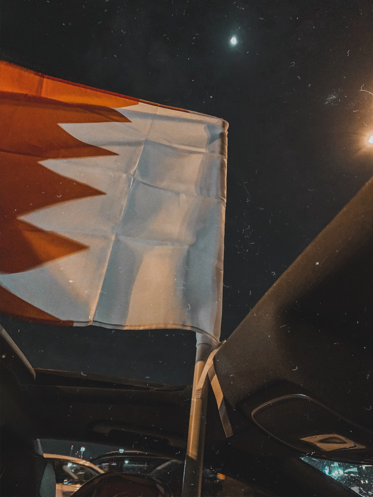
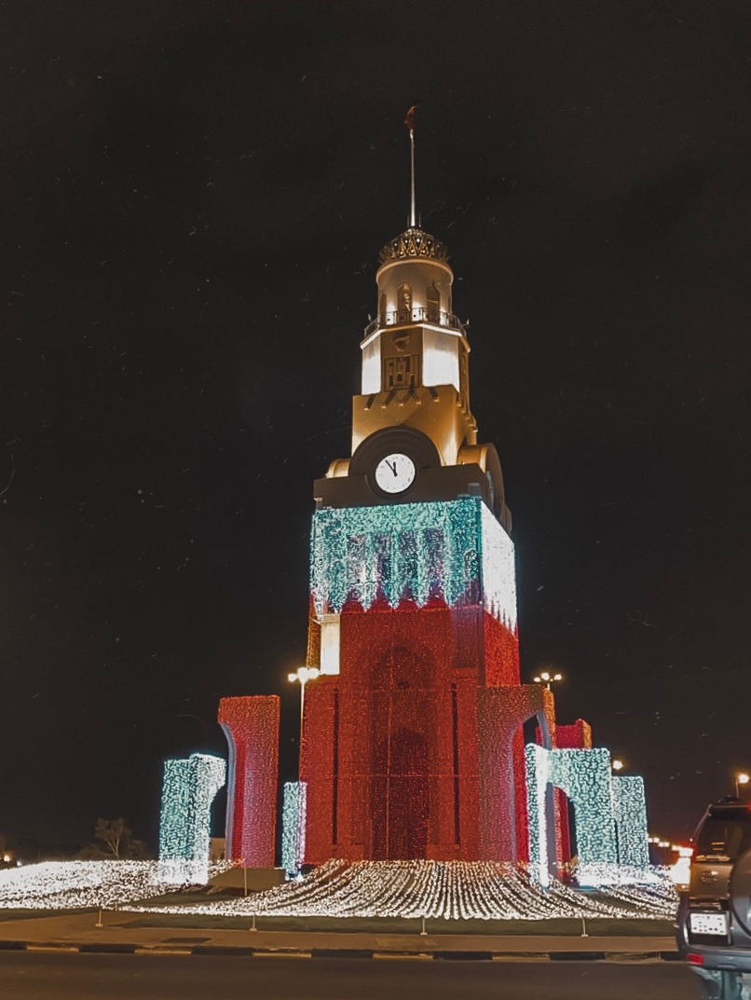

A Collage of Bahrain's lovely events
Bahrain originally means "Two Seas". Today, Bahrain's "two seas" are generally taken to be the bay east and west of the island, the seas north and south of the island, or the salt and fresh water present above and below the ground. Bahrain is a tiny island placed between the Qatar peninsula and the north eastern coast of Saudi Arabia. The capital and biggest city in Bahrain is Manama, ruled by his Majesty Shaikh Hamad bin Isa Al Khalifa. The population of Bahrain is over 1.2 million with 600,000 non nationals. This small island is known for it's vast majority of oil and petrol findings, with Bahrain ranking the most humid and hot country reaching to 38 degrees in August and coming down to 14 degrees in January. (More on wikipedia)
During the start of December 2019, The GCC countries were participating in a football match to win the Gulf cup. This football match takes place every three to four years between the Khaleeji countries. It had been 50 years since Bahrain won this Gulf Cup, However, it all changed on the 8th of December 2019, it was marked the day of happiness in Bahrain and in history as the supporters were filled with joy for their dear country. National football team had their last match taking place at Doha's Khalifa Stadium, Qatar. After the match finished and the referee finally blew the whistle, the streets in Bahrain were filled with cars and Bahraini Flags, music and celebration. This continued until our beloved team members came back the next day from Doha and we had the chance to celebrate the achievement with them at the Bahrain International Circuit (BIC).
Although 14 August is the actual date on which Bahrain gained its independence from the British, the kingdom does not celebrate or mark that date. Instead, the state annually celebrates 16 December as National Day, to coincide with the day that former ruler Isa bin Salman Al Khalifa ascended to the throne. As such, 16 December is a national holiday and is usually celebrated with firework displays (More on wikipedia). These photos were taken by me and my friends during the holidays leading upto Bahrain's National day which takes place on the 16th of december every year. Its the time where everyone celebrates our Independance Day by having fireworks at the Bahrain International circuit (BIC), where we also have concerts and races taking place every year during the winter, right around March/April.
Audi AG is a German automobile manufacturer that designs, engineers, produces, markets and distributes luxury vehicles. They are famous for being incredibly balanced between sport and comfort. They held an event which took place on November 2018, where Audi further introduced their innovation through building electric cars that would be available to the market in 2019-2020. The car show displayed a range of beautifully designed German-made cars, all so intricate with their interior and exterior designs that made all the guests fall inlove with each unique model displayed at the event.

The old American Muscle 1980's cars hold a big place in my heart. I've always loved these cars from the start, right when i knew a
thing or 2 about them. They look so breathtaking on the road and never run out of style!
For some reason, the way they were built back in the day allowed them to be great long-lasting cars that are still in use
in this day and age.container
My uncle has a wide range of classic cars in his house and i'm always fascinated everytime i visit! I guess little things like this
tend to run in the family as he inherited this feature from his father, who is my Grandfather and he loved old collections of Jaguars and
Chevy's.
As mentioned above, these are a few pictures from the Concerts that took place at the Bahrain International Circuit in 2019 during
winter season. At this show, a famous Norwegian DJ by the name ofKygowas brought to perform to the Bahraini audience, followed by another
well known Dutch DJ, Martin Garrix, who performed the very next day. These events bring together the Fans and lovers of music and create
a wonderful yet mesmerizing experience for all of us, making us look very much forward to the coming events.
The BIC and it's board have always provided the best experiences and events for the citizens of their country
which allows us to always attend their events and never miss out any opportuinity because we will regret it!